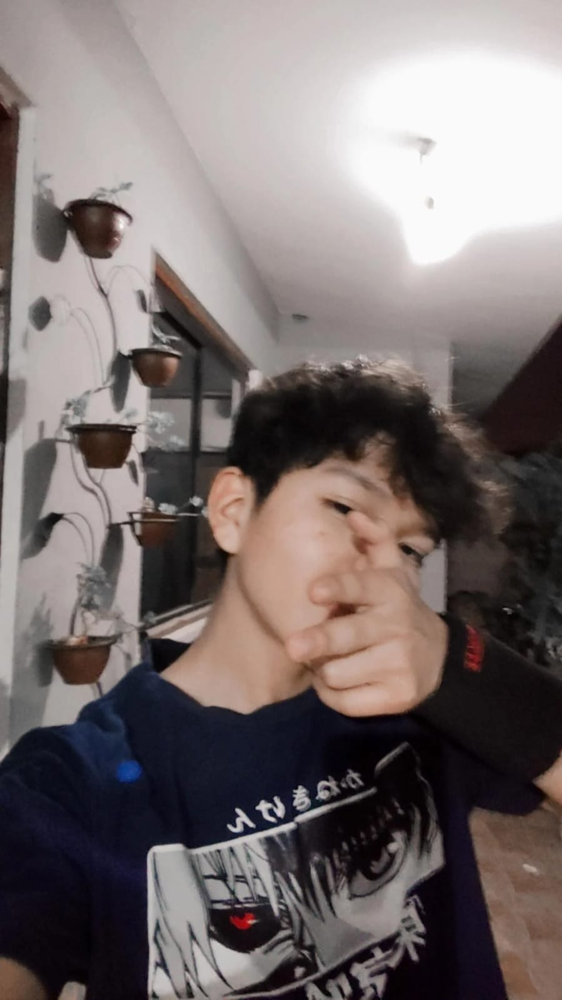

Día del Estudiante y de la Primavera. ¡Celebramos el esfuerzo, el entusiasmo y el futuro de nuestra juventud!
Durante mi etapa escolar he tenido materias que me han resultado más fáciles y otras que me han costado bastante. También he tenido momentos en los que me he sentido cansado o preocupado por los trabajos y exámenes, pero poco a poco aprendí que si me esfuerzo y soy constante puedo mejorar. Una de las áreas que más me ha llamado la atención es Sistemas Informáticos, porque me gusta aprender sobre tecnología, programación y la creación de proyectos. El colegio también me ha ayudado a conocer mejor mis fortalezas y las cosas que todavía debo mejorar. Considero que soy una persona responsable, con ganas de aprender y que puede aportar ideas cuando trabaja en equipo. Sin embargo, todavía quiero mejorar mi forma de comunicarme, tener más confianza en mí mismo y no preocuparme tanto por las críticas. Ahora que estoy acercándome a una nueva etapa de mi vida, valoro más todo lo que he vivido en el colegio. Sé que todavía me falta mucho por aprender, pero quiero llevar conmigo las experiencias, enseñanzas y amistades que conseguí durante estos años.
Quiero aprender más sobre programación, tecnología y desarrollo de proyectos, pero también quiero seguir mejorando como persona. Sé que para alcanzar mis objetivos necesitaré ser constante, tener paciencia y no rendirme cuando algo no salga como esperaba. También quiero aprender de mis errores y aprovechar cada oportunidad que se presente para crecer. En el futuro me gustaría crear proyectos tecnológicos que puedan ser útiles para otras personas y que solucionen problemas de la vida cotidiana. Quiero demostrar que todo el esfuerzo que estoy realizando durante mi etapa escolar puede convertirse en algo importante. También me gustaría tener estabilidad, ayudar a mi familia y poder disfrutar de nuevas experiencias. Además de mis estudios y mi trabajo, quiero tener tiempo para las personas que quiero, conocer nuevos lugares y vivir experiencias que me permitan seguir aprendiendo. Me gustaría viajar, conocer lugares tranquilos rodeados de naturaleza y construir buenos recuerdos. No sé exactamente cómo será mi futuro, pero tengo claro que quiero construirlo con esfuerzo y responsabilidad. Mi propósito es seguir avanzando, aprovechar mis capacidades y convertirme en alguien de quien pueda sentirme orgulloso.